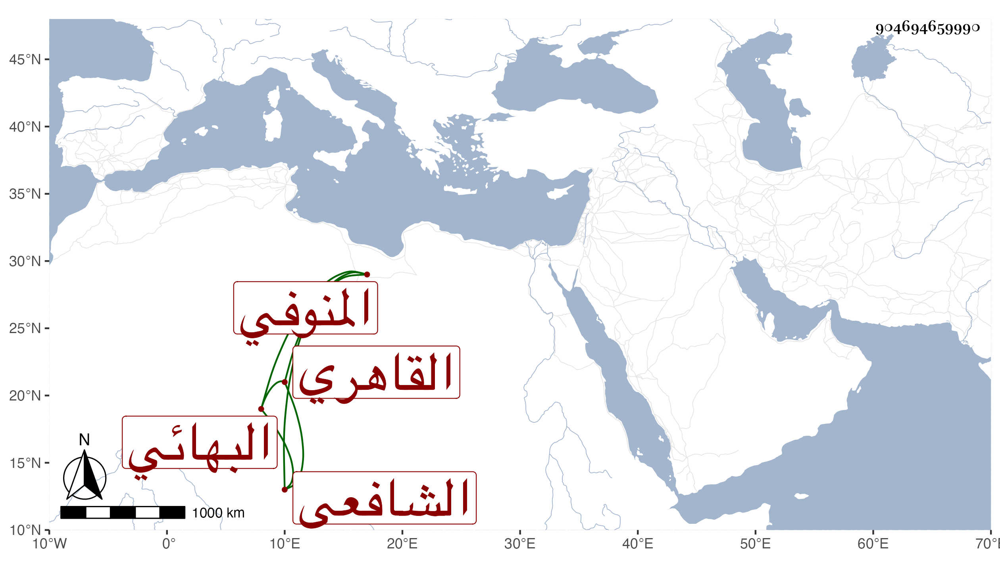

0902Sakhawi.DawLamic.ITO20230111-ara1.EIS1600.904694659990
Biography ID: 904694659990
394
محمد بن علي بن أحمد بن محمد بن أحمد بن عبد القادر البدر ويلقب قديما بالمحب بن النور أبي الحسن المنوفي الأصل القاهري البهائي الشافعي شقيق أحمد الماضي وأبوهما وجدهما وأمهما ابنة ابن حلفا الضرير . ولد تقريبا سنة سبع وأربعين وثمانمائة ونشأ في كنف أبويه وقرأ القرآن والعمدة وعرضها على جماعة كالمناوي والعلم البلقيني وكاتبه ، وأجاز له ولأخيه باستدعائي شيخنا وابن الفرات وآخرون وقرأ علي قليلا في البخاري وربما حضر دروس الزين الأبناسي وجلس مع أبيه شاهدا وتولع بالنظم وله فيه نوع فهم ، وكان أحسن خالا من أخيه . مات في ذي الحجة سنة تسع وثمانين بعد أبيه بأشهر ودفن بتربة تجاه أرغون بأسفل الكوم عفا الله عنه .
